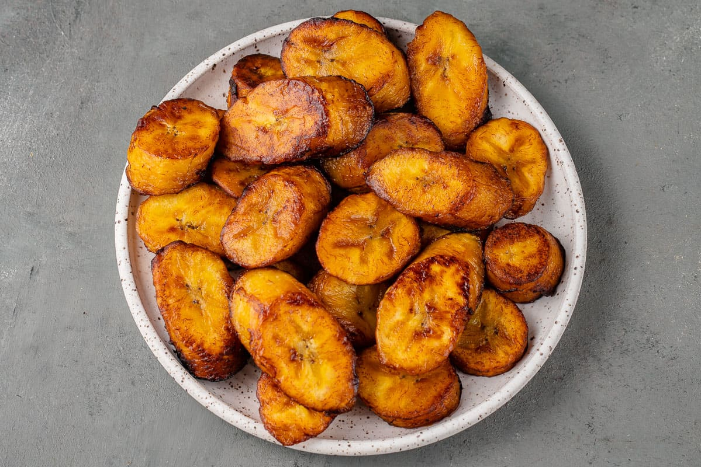

Platano maduro frito

Platano maduro frito (not my photo)
Description
Fried plantains are yummy. Please make.
Ingredients
- a couple ripe plantains, should have black spots, cut into thick slivers
- oil for frying
- salt
Steps
- Heat up the oil in a skillet until it reads some good temperature for frying...
- Fry the plantains a couple at a time until golden brown on both sides, be careful not to overcrowd the skillet.
- Once done, place the plantains on a plate lined with paper towels to soak up the excess oil. Be sure to sprinkle with salt while still hot.
- Enjoy!